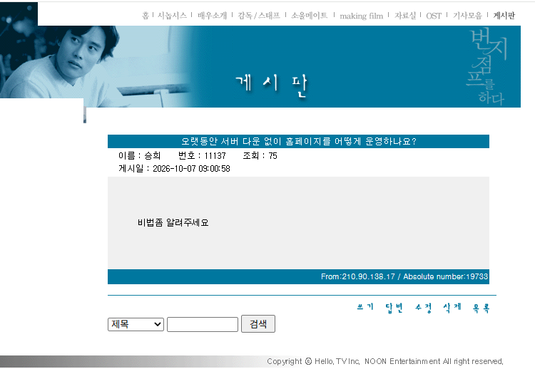

알고 싶었구나?

알고 싶었구나?

2001년 영화인데 관련 게시판이 살아있다고..?
뭔 게시판이냐 ㅋㅋㅋㅋㅋㅋ
들어가자마자 헬다이버 모집 뭔데 시발ㅋㅋㅋ
온갖 커뮤 다퍼졌나봄 트래픽 초과 뜸 ㅋㅋㅋ
아사달 ㅁㅊ ㅋㅋㅋ
ㅇㄱㅈㅉㅇㅇ?
저기 승희라고 있으니 진짜임
게시판첫글이 2000년 던데
진짜로 26년된 싸이트인데 아직도 운영중 이라고???
해상도도 어디 640*480p crt모니터용 정도될법한 ui에다가
저때 개인홈페이지 만드는 게 붐이어서 웹호스팅 업체들이 평생이용권을 팔았었음
업체 안망하는 이상 홈페이지 문 안닫는 거지 뭐
음란글이나 광고글만 애정있는 사람 하나가 주기적으로 지워주면 되고
평생이용권... 오히려 이젠 적자아닌가?
ㄹㅇ 운영유지비가더나오겠네 전기세
뭐 파는데 호스팅비용 돈 억주고 평생이용권 팔았나
저런 홈페이지 용량이 얼마나 되겠어 ㅋㅋㅋ 트래픽도 일제한 있어서 이슈되면 바로 트래픽 차단되는 구조라 그다지 부담은 안갈 거
하긴뭐 ㅇㅇ 끽해봐야 텍스트업로드니 바이트단위 트래픽먹을거정도야 디시처럼 숨쉬듯이 글제목을 댓글로 달아버리는거나 글마다 자짤탑재하는곳은아니니까
클라우드 플레어를 쓰세요~
(이미씀)
서버 근처에서 라면을 먹지 않는다.
1단 라면을 끊어
그것은 사람이 없는 홈페이지를 운영 하는겁니다.
군대 인트라넷 같네 ㅋㅋㅋ
와 2000년대 초반 느낌나는 홈페이지 오랜만이네 진짜 ㅋㅋ
궁금할 만한 듯
와 홈으로 들오가니까 계속 관리하고 계신가보네
ㅅㅂ 트래픽 초과 ㅋㅋ
감자를 햇감자로 바꾸면됨
감자 바꾸라고!! 주기적으로 바꿔주고! 서버실에서 라면 먹지 말고!!
와 자작으로 개드립이라니!! (앞서 번지점프 홈페이지 기웃하다가 얻어 걸음)
이거보고 비추드림
너 유튜브 댓글 좋아요 1천개달리면
*수정-좋아요 1천개 감사합니다 ㅠㅠ
수정2-좋아요 2천개라니!!!
수정3-세상에 좋아요 3천개 감사합니다ㅠㅠㅠㅠ
이러지?
개까다롭네 개붕이들 이런 댓글 달수도 있지
개붕아 너 아이피가 21x.9x.13x.1x 이거니? 음...?
자작추